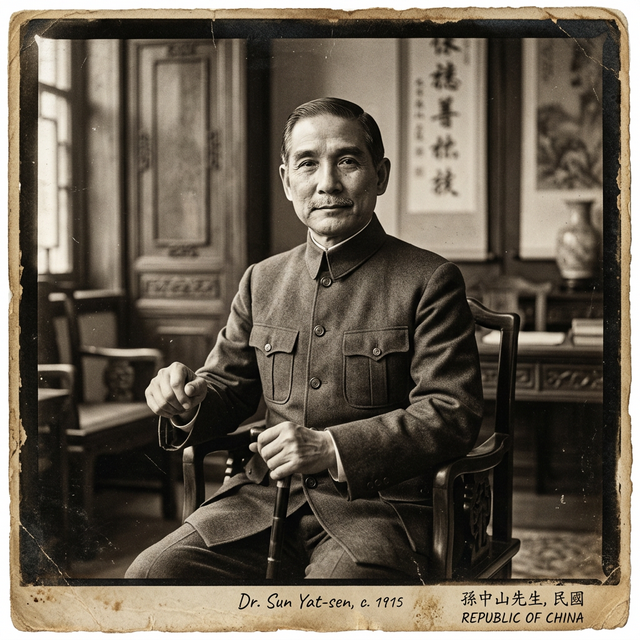

孫中山
被神化的先行者與黨國威權之父
在兩岸的政治圖騰中，他是不可褻瀆的「國父」與無瑕的「民族救星」。國民黨尊他為民主憲政的締造者，教科書將辛亥革命的成功全數歸功於他的英明領導。然而，拋開神化的光環與政治造神運動，真實的孫中山是一位為了達到「救國」目的，不惜屢次以出賣國家領土主權為籌碼換取外國軍火，並在晚年親手將原本鬆散的民主政黨，改造成要求絕對服從的列寧式威權政黨的極端實用主義者。他為近代中國的「黨國獨裁體制」播下了第一顆種子。
📂 檔案閱覽室
真實史實：歷史現場的另一面
歷史課本說： 孫中山先生親自領導了武昌起義，憑藉他一人的革命號召力，成功推翻了滿清政府，建立了亞洲第一個民主共和國。
點擊解密檔案 ➔解密真相（缺席的革命者）： 1911年10月10日武昌起義爆發時，孫中山人正在美國科羅拉多州的丹佛市，他是在隔天的報紙上才得知起義消息的。辛亥革命之所以能成功，主要是國內湖北新軍的兵變、立憲派士紳的倒戈，以及袁世凱北洋集團逼宮的多方妥協結果。孫中山的貢獻在於長期的思想播種與海外募款，但他從未真正掌握過推翻清朝的核心武裝力量。
點擊翻回課本歷史課本說： 孫中山一生堅定捍衛國家主權，是抵抗帝國主義侵略的民族英雄，與簽署二十一條的賣國賊袁世凱形成強烈對比。
點擊解密檔案 ➔解密真相（為求贊助不惜賣國）： 史料解密顯示，孫中山為了籌措推翻袁世凱的革命資金，曾多次主動向日本提出極度損害中國主權的交易。1915年初，當袁世凱正與日本就「二十一條」苦苦周旋時，孫中山卻私下致函日本首相大隈重信，主動提出比二十一條更優厚的條件（包含將滿蒙與中國軍警財政權讓與日本），企圖換取日本出兵幫他奪權。他的邏輯是「只要能奪取政權，領土主權皆可作為交易籌碼」。
點擊翻回課本歷史課本說： 孫中山一生堅定不移地推動西方式的民主憲政，他提出的「三民主義」與「五權憲法」是中國民主的最高指標。
點擊解密檔案 ➔解密真相（黨國體制的真正祖師爺）： 經歷幾次挫折後，孫中山對西式民主與議會制度徹底失去耐心。1914年組建中華革命黨時，他強制要求所有黨員「按指印」宣誓對他個人絕對服從；晚年更全盤引進蘇聯共產黨的「列寧式政黨」體制，確立了「以黨治國」、「黨指揮槍」的一黨專政模式。現代中國的極權獨裁基因，正是由他親手植入的。
點擊翻回課本
孫文
(1866 - 1925)
黨國體制的開創者從民主同盟到極權轉向
「租讓滿洲」的歷史黑案： 國際漢學家（如韋慕庭 C. Martin Wilbur）的研究指出，孫中山在面臨革命絕境時，其「實用主義」往往超越了民族主義的底線。除了1915年致日本首相大隈重信的密函外，早年他為了換取法國的財政與軍事支援，也曾提議將中國廣西與雲南的特權讓與法國。對孫中山而言，「推翻現有政權」是最高道德，為了這個目標，國家的邊疆領土與主權皆可被視為換取列強軍火的「抵押品」。這種「為了目的不擇手段」的做法，在國民黨史觀中被徹底抹除。
從民主同盟到極權轉向（按指印事件）： 辛亥革命初期的同盟會，是一個內部派系林立、相對民主的鬆散聯盟（黃興、宋教仁皆有強大影響力）。但當議會路線被袁世凱摧毀後，孫中山將失敗歸咎於「黨內不夠獨裁、不聽我的話」。1914年他在日本重組「中華革命黨」時，竟定下規矩：入黨者必須立誓「附從孫先生再舉革命」，並在誓詞上按捺指印以示個人效忠。這種帶有封建會黨色彩與個人崇拜的規定，激怒了黃興、胡漢民等民主革命元老，導致他們拂袖而去。孫中山的民主思想，在此刻已實質死亡。
聯俄容共與「黨國怪物」的誕生： 1923年，在遭到西方列強冷落與地方軍閥（陳炯明）驅逐後，走投無路的孫中山選擇了與蘇聯（共產國際）結盟。他請來了蘇聯顧問鮑羅廷（Mikhail Borodin），對國民黨進行了徹底的「布爾什維克化」改造。他建立了黃埔軍校，設立了「黨代表」制度（即政治委員），確保軍隊絕對忠於政黨。這支擁有宗教般信仰與嚴密監控網的「黨軍」，雖然日後幫助國民黨武力統一了中國，但也徹底埋葬了民國初年雖然混亂但充滿活力的自由議會民主。今天兩岸的「黨國體制」，皆溯源於孫中山晚年的這次致命轉向。
📚 權威文獻參考
- 韋慕庭 (C. Martin Wilbur)，《孫中山：壯志未酬的愛國者》(Sun Yat-sen: Frustrated Patriot)
- 史扶鄰 (Harold Z. Schiffrin)，《孫中山與中國革命的起源》
- 唐德剛，《晚清七十年》、《袁氏當國》